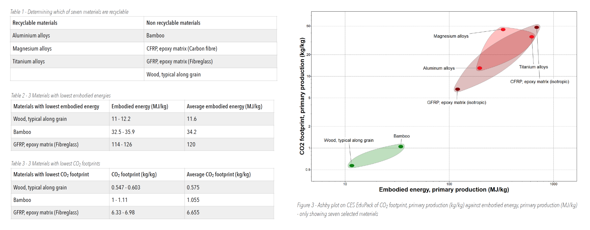
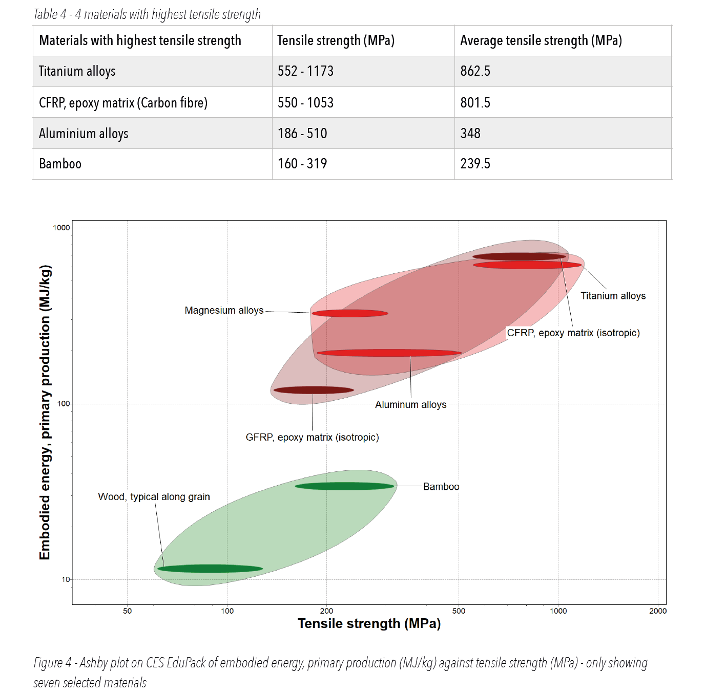
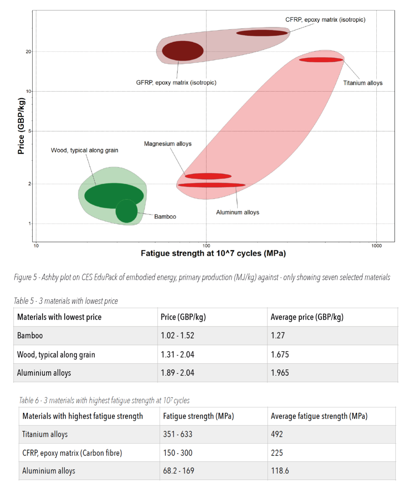
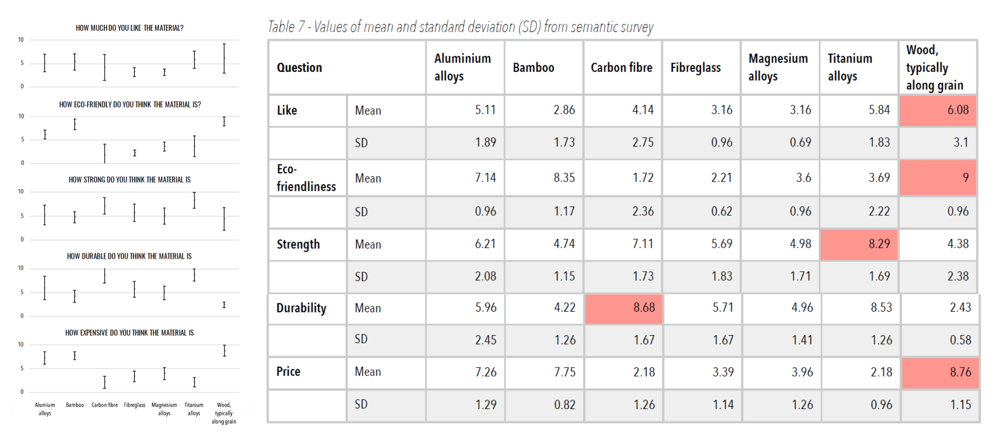

Louis Cutner
In this report, a range of 69 materials is explored to find the ideal material for Tomaszewska
Eco-Innovations to make a plane
wing out of. Tomaszewska Eco-Innovations is an eco-friendly design company, and so the criteria considered when
deciding
what material the wing should be made from were eco-friendliness, strength, durability, cost, and a semantic
survey was
conducted.
First, the 69 materials were narrowed down to seven, on which further exploration was conducted. These seven
materials were
selected as they had appropriate Young’s moduli and densities. The eco-friendly and mechanical properties of
these seven
materials were compared and as a result, aluminium was chosen as the material that Tomaszewska Eco-Innovations
should
use for their plane wing.
BOUNDARY CONDITIONS
The wing of a plane is a key structural element, and so although Tomaszewska Eco-Innovations had asked for an
eco-friendly
material to make the plane wing out of, the wing also had to be structurally strong enough to support the plane
as to not lead
to failure. Hence certain materials were disregarded purely for safety and to maintain structural integrity.
Furthermore, it was
important to compare material longevity to eco-friendliness, as a material which has a small carbon footprint
but needs to be
replaced frequently may result in more emissions than a material with a slightly greater carbon footprint but
much better
longevity.
To make an efficient plane, the weight must be kept to a minimum, hence although certain materials may be
fantastically
strong, if their density is too large, in practice they would be useless. For this reason, only those materials
with a density of less
than 5000kg/m3 were considered.
In order to select light materials that were also strong enough, a performance index was calculated for the wing
of a plane
using the assumption that it has the shape of a rectangular prism. The performance index prioritises a large
Young’s modulus
and low density to achieve this. When plotting the log of Young’s modulus on the Y - axis, against the log of
density on the X -
axis, the gradient is the performance index which was determined to be a gradient of one.
With the performance index, along with the limit of density being less than 5000kg/m3 the range of materials was
refined to
a suitable selection to then further explore.
MATERIAL EXPLORATION
Using CES EduPack, the 69 materials in level one were limited by the performance index (keeping only those above
a line
with a gradient of one) and by selecting only those with a density of less than 5000kg/m3 (mentioned in boundary
conditions). Technical ceramics, glasses and non-technical ceramics were also removed as although they all
appear suitable
from the graph, in reality, they are far too brittle to be practical for a plane wing. All the materials
excluded are grey in Figure 1,
and all the families are labelled.
As a result of these limitations, the 69 materials in level one were narrowed down to seven materials which were
further
explored and narrowed down based on eco-friendliness, tensile strength, fatigue strength, and price. These
materials were all
in the material families composites, metals and alloys, or natural materials. The seven remaining materials
produced by CES
EduPack (shown in Figure 2) were:
1. Aluminium alloys
2. Bamboo
3. CFRP, epoxy matrix (Carbon fibre)
4. GFRP, epoxy matrix (Fibreglass)
5. Magnesium alloys
6. Titanium alloys
7. Wood, typical along grain

ECO-FRIENDLINESS
To determine how eco-friendly each material was, first the materials were split into those which are recyclable
and those which
are not (see Table 1). All of the metals are recyclable but the natural materials and composites are not.
Although the natural
materials are not recyclable, they are sustainable as they are not finite resources and are not very resource
intensive to
produce. At this stage non recyclable materials will not be ruled out, but recyclable materials will be favoured
going forward as
they tend to be more eco-friendly.
CO2 footprint was plotted against the embodied energy in each material (see Figure 3). Figure 3 shows that
natural materials
(bamboo and wood) performed much better than the composites and metals. However it is also apparent that
magnesium
alloys, titanium alloys and carbon fibre performed particularly poorly. Table 2 shows the three materials which
had the lowest
embodied energies. Although fibre glass performed in the top three in Table 2, its average embodied energy is
nearly four
times that of bamboo (which was second best). This is very similar to how the seven materials’ CO2 footprints
compared in
Table 3. In fact, the difference between glass fibre and bamboo’s CO2 footprints are more extreme than the
difference between
their embodied energies as fibre glass has a CO2 footprint of over six times bamboo’s.
Materials that will potentially be disregarded as contenders for the plane wing, having considered their
eco-friendly
properties, are magnesium alloys, titanium alloys, and carbon fibre. Whereas those that will be looked at
favourably for their
eco-friendly properties are wood and bamboo.

TENSILE STRENGTH
To determine how strong each material was, embodied energy was plotted against tensile strength (figure 4),
hence
comparing eco-friendliness to strength. A general trend is seen that as the material has a greater tensile
strength, it has a
greater embodied energy. However there are some interesting outliers as although wood has fantastic eco-friendly
properties,
its tensile strength is far below any others - hence it will likely have to be disregarded. Conversely titanium
alloys and carbon
fibre have excellent tensile strengths (highest and second highest respectively) but their excessive embodied
energies will
likely result in them being excluded as well. This is because their tensile strengths are superfluously large,
and tensile
strength is not so important that it is worth disregarding the eco-friendliness of the material entirely. The
resulting materials
cluster around a moderate tensile strength whist their embodied energies differ vastly. When looking at these
materials
bamboo stands out as it has the lowest embodied energy of this middle group whilst still a respectable tensile
strength.
However, at 348 MPa (see Table 4) aluminium has a tensile strength (still less than half titanium’s) much larger
than bamboo
with a tensile strength of 239.5 MPa. So it also very respectable and has an adequate embodied energy.

FATIGUE STRENGTH
To determine how durable each material was, in terms of its longevity as a plane wing, the fatigue strength of
each material
was explored. The comparative fatigue strength of each material after 107 cycles showed which of the materials
would have a
longer operating life as a plane wing. It is also important to consider the price of the material. If a material
was to have a low
fatigue strength, so not last very long as a plane wing, but also be very cheap, it could be more effective than
a material with a
high fatigue strength but absurdly high price. Hence although it may seem logical to seek a material with very
high fatigue
strength and very low price, this material may not be best for Tomaszewska Eco-Innovations.
When looking at Figure 5, it is apparent that fibreglass, carbon fibre and titanium alloys have fantastic
fatigue strengths as
they are each in the top three, with titanium alloys having a fatigue strength of 492 MPa (refer to Table 6).
However, they are
all likely far too expensive to be appropriate as they would make the wing unaffordable. The remaining materials
are all
significantly cheaper with magnesium and aluminium alloys performing particularly well as they are both cheap
and have
relatively high fatigue strengths. As an example aluminium performs excellently as it is the third cheapest
material at 1.965
GBP/kg (refer to Table 5), not much more than wood or bamboo, and still has the third highest fatigue strength.

SEMANTIC DIFFERENTIAL SCALES
In order to explore the public’s perception of the seven materials, 13 random members of the public filled in a
survey for each
material. Answers were given as a number from 0 to 10, with 0 being completely disagree, and 10 being completely
agree.
For each material, five questions were asked:
• Like - how much do you like the material (10 being a lot)? This was asked to determine the public’s perception
of the
material. If a material is very highly performing but universally disliked it would be unwise to choose this
material as
customers wouldn’t buy it.
• Eco-friendliness - how eco-friendly do you think the material is? This was asked as the aim for Tomaszewska
Eco-
Innovations is to create an eco-friendly plane wing. If the customer doesn’t see the material as an inherently
ecofriendly
material then they won’t believe it is very eco-friendly.
• Strength - how strong do you think the material is? This was asked as passengers on a plane would not feel
safe
boarding a plane if the wing was made of a material perceived to be weak.
• Durability - how durable do you think the material is? This was asked as if the customer doesn’t believe the
material is
durable that won’t trust that it will have a long working life span and so choose another plane wing.
• Price - how expensive do you think the material is (10 being very cheap)? This was asked as if the material is
expensive,
the customer would not want for the public to believe it is an inherently cheap material - they want the
passengers to
be perceive the plane wing as very high end and expensive.

Conclusion
The aim of this investigation was to choose a material that Tomaszewska Eco-Innovations could use to create
eco-friendly plane
wings. Firstly, CED EduPack was used to narrow down 69 materials to 7 which were then explored in greater depth.
As it is the
largest factor, the eco-friendliness of each material was looked at first - recyclability, embodied energy, and
CO2 emissions in
production. From this research it was determined that even though they have fantastic strength properties,
magnesium alloys,
titanium alloys, and carbon fibre would have to be disregarded. This was due to their high emissions and
embodied energies
in primary production. Furthermore carbon fibre isn’t recyclable.
Then the remaining materials were assessed on their strength by comparing their tensile strengths and their
fatigue
strengths. From this research it was determined that wood would have to be disregarded as its tensile strength
was
significantly below that of the others. Price was also looked at, and fibreglass was disregarded as it offered
no greater fatigue
strength or tensile strength than aluminium and yet was significantly more expensive.
With only aluminium alloys and bamboo left, a semantic survey was done to gauge the public’s perception on the
materials.
From this data, it was observed that aluminium is preferred and perceived as stronger and more durable than
bamboo
although slightly less eco-friendly.
Aluminium was chosen as the material for Tomaszewska Eco-Innovations to use for their plane wing as although
bamboo
outperforms it in embodied energy and CO2 emissions, aluminium is recyclable where bamboo is not. Furthermore in
tensile
strength and fatigue strength, aluminium performs much better than bamboo, whilst only having a slightly greater
price.
Therefore as it would have a much longer working life than bamboo it would be cheaper in the long term.
Furthermore the
public’s perception of aluminium is that it is stronger and more durable than bamboo so would feel safer to
passengers flying
in a plane with aluminium wings.